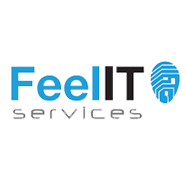
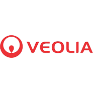

Evenimentul național de carieră JobShop® își propune facilitarea colaborării dintre studenți, companii şi Universitate, cu scopul de a îndeplini nevoile profesionale ale studenților și absolvenților și de a-i aduce pe aceștia mai aproape de job-ul dorit!
JobShop® le oferă studenților și absolvenților oportunitatea de a interacționa în mod direct cu reprezentanții companiilor, în vederea formării, dezvoltării și pregătirii lor pentru o viitoare carieră. În acest sens, aceştia au posibilitatea de a participa la următoarele activităţi din cadrul evenimentului:
Ești în căutarea unui job, internship sau program de practică? Te așteptăm alături de noi începând cu 25 martie!
BEST, Board of European Students of Technology, a luat naștere în 1989 în Berlin, și în anul 2000 în Iași, din dorința studenților pentru educație complementară celei universitare, pentru dezvoltare și deschiderea unor noi orizonturi. Astfel, misiunea noastră, alături de dorința de a aduce studenții, Universitatea și companiile în același punct, s-a răspândit în 96 de Universități Tehnice din 33 de țări ale Europei.
BEST Iaşi are ca scop reprezentarea intereselor studenţilor de la Universitatea Tehnică “Gheorghe Asachi” din Iaşi prin facilitarea comunicării dintre Universitate, studenţi şi companii. Prin evenimentele pe care le organizăm acoperim atât o latură academică în cadrul programelor de educaţie complementară, cât şi nevoile studenţilor de implicare în evenimente cu caracter competiţional şi recreativ.
Află mai multe despre BEST »